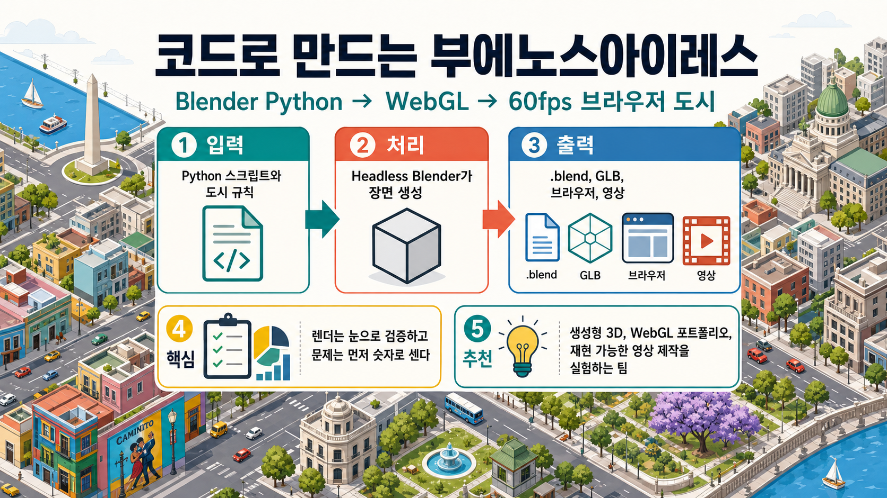

Aerolab/silicon-baires
한눈에 보기
코드만으로 부에노스아이레스풍 아이소메트릭 도시를 만들고, Blender 산출물을 WebGL 브라우저와 영상 캡처까지 이어주는 재현 가능한 3D 제작 실험이야.
Blender PythonHeadless renderthree.js/WebGLVideo capture0BSD
5stars
2forks
13k대략 코드 라인
60fps브라우저 목표
짧은 결론
이 저장소는 “멋진 도시 데모”보다 “3D 장면을 코드로 만들고, 검증하고, 브라우저와 영상까지 연결하는 작업 방식”이 더 핵심이야. 직접 쓰려면 먼저 ./bl scripts/verify_setup.py와 web 실행까지 자기 장비에서 통과하는지 보는 게 좋아.